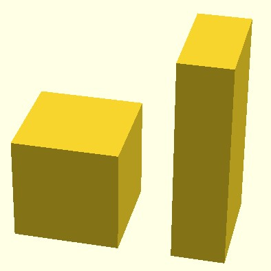

Масштабирует свои дочерние элементы, используя указанный вектор. Если размер куба = [10, 10, 10] и масштаб = [0,5, 1, 2], то куб станет [10*0.5, 10*1, 10*2] => [5, 10, 20].
scale(v = [x, y, z]) (figure)
примеры:
cube(size = 10) + translate(v = [15, 0, 0]) (scale(v = [0.5, 1, 2]) (cube(size = 10)))
sphere(r = 10) + translate(v = [15, 0, 0]) (scale(v = [0.5, 1, 2]) (sphere(r = 10)))